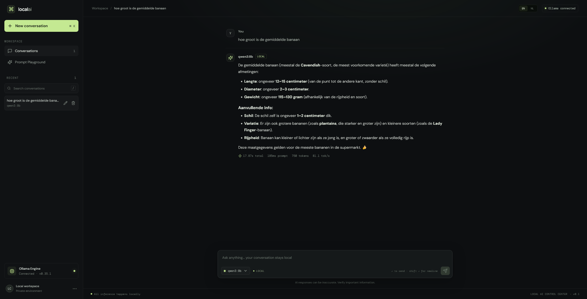

PROJECT 001WERKEND PRODUCT
LOCAL AI · OLLAMA
Local AI
Control Center
Een lokaal dashboard voor chatten met Ollama-modellen, gesprekken beheren en antwoorden naast elkaar vergelijken.
Bekijk op GitHublocal-ai-control-center · localhost

WAT HET DOET
Streaming chat, persistent gesprekken, generatiecijfers en een speeltuin om modellen te vergelijken.
TECH STACK
MIJN ROL
Requirements, architectuur, AI-gestuurde implementatie, integratietests en review.